Recurrence plots
Source code for this document is found here.
In this document, we provide supplementary information about recurrence measures and examples of them, as well as provide code for the figures in the manuscript.
Recurrence measures
Trend
What it depicts: The stationarity of the system, i.e. whether the recurrent patterns emerge homogenously across the plot (indicating system stationarity), or if they fade to the lower right or and upper left corners (indicating the system changes in time, is non-stationarity). For example, a time series of any gradually but surely increasing or decreasing numbers would show a high trend value, whereas a series in which values fluctuate around more or less the same values, would exhibit a low trend value.
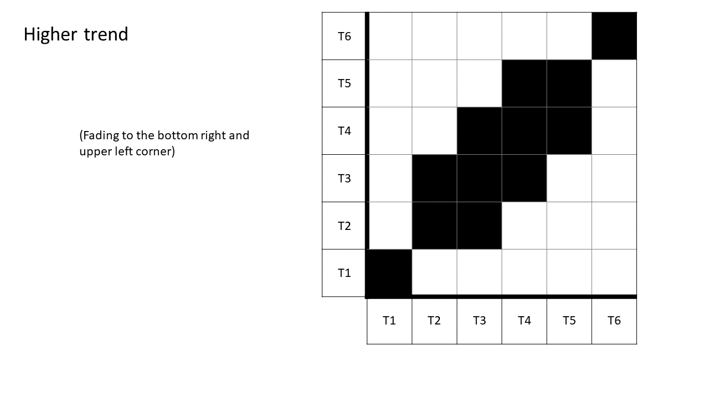
Determinism
What it depicts: The proportion of all recurrent points which land on diagonal lines, meaning that there is a pattern to re-occurrence. For example, motivation for physical activity might be high (or low) on the same weekdays for several weeks in a row, indicating high determinism. Sleep-wake cycles would also show high determinism, whereas random numbers would show no discernable patterns and the lowest possible determinism values.
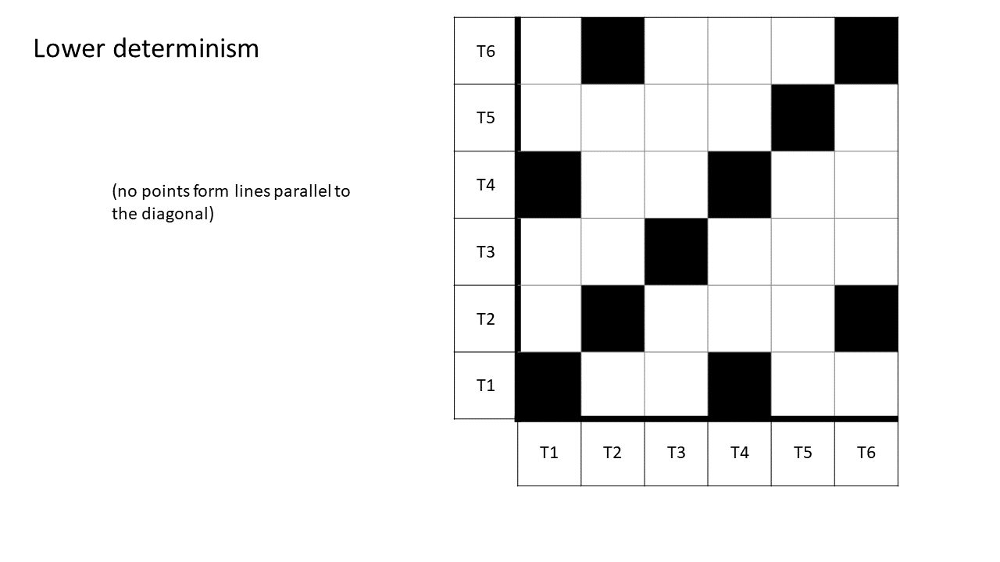
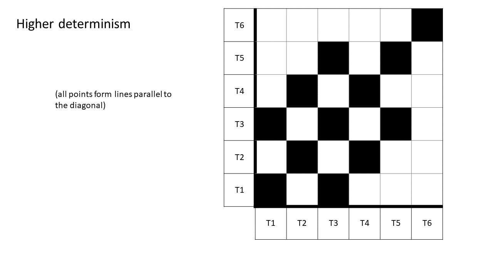
Trapping time
What it depicts: The average length of vertical line structures; quantifies the time series’ tendency to get “stuck” on particular values or states. Trapping time could indicate a lack of healthy variability [@navarroHealthyVariabilityOrganizational2015], which in turn could be indicative of a system performing suboptimally or exhibiting maladaptive behaviour.
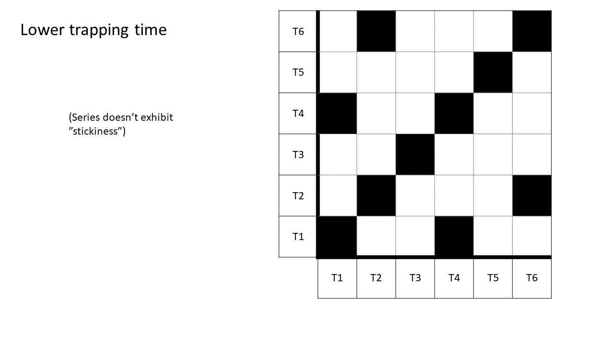
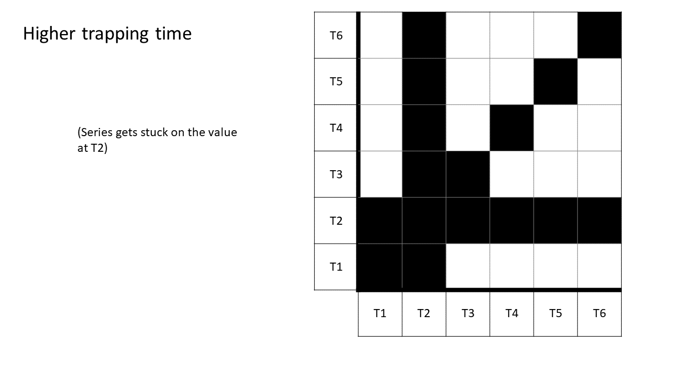
Entropy
What it depicts: The complexity or unpredictability of pattern lengths (i.e. variability in the length of the lines that are parallel to the diagonal); the heart rate of a person playing in a soccer match would show high entropy, whereas their heart rate in a training session of regular timed sprints would show low entropy.
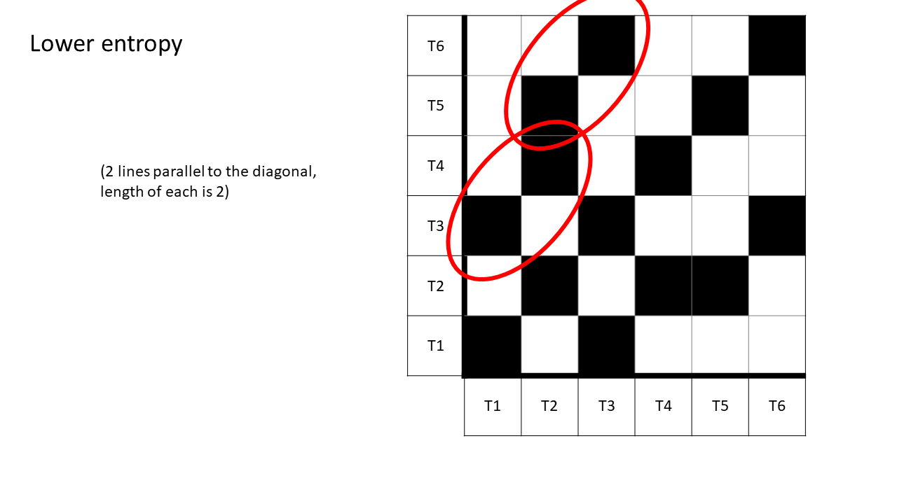
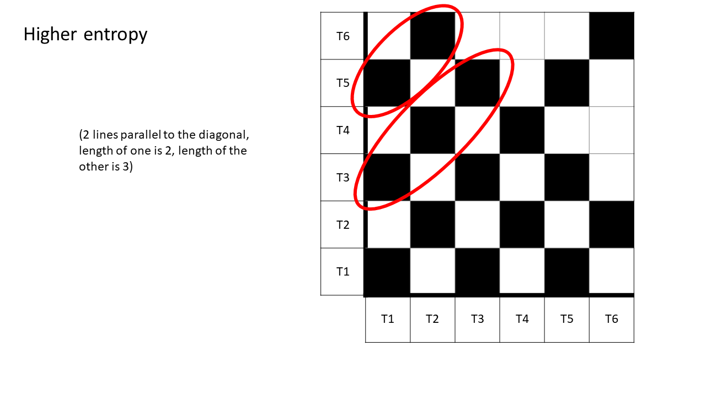
Average diagonal line length
What it depicts: The average length of the diagonal line structures, that is, the average time the system repeats a behavioural sequence it has exhibited previously. This can be thought of e.g. as a person’s (or their motivational system’s) consistency in repeating habitual behaviour, such as walking many steps during weekdays and little during weekends; a weekend with many steps (or a weekday with few steps) would break this pattern and reduce the average diagonal line length. Hence: While entropy can be thought of as a type of variance of the diagonal lines lengths, average diagonal line length would represent their mean length. Average diagonal line length can also be interpreted as the mean prediction time.
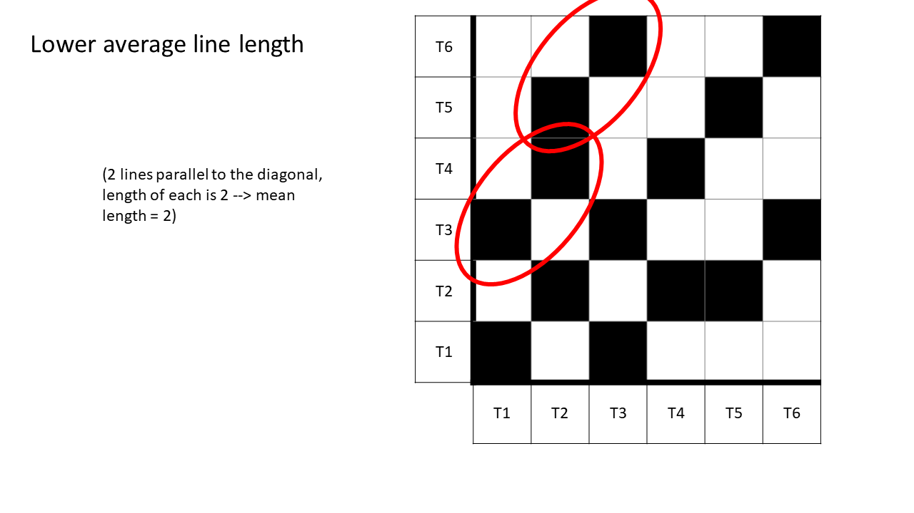

Possible substantive research questions include:
- Is trapping time related to inflexible behaviour (e.g., inability to adapt to environmental demands), and are interventions that lessen it analogous to “loosening up” a person’s reaction repertoire?
- Does an intervention destabilise the dynamics of a maladaptive target behaviour, leading to increased entropy in recurrence structures?
- At which periods in a time series is the target behaviour stationary, and do initiations of trends collide with interventions, indicating intervention’s impact?
- How is determinism connected to facets of habit theory?
- Does average diagonal line length go down (conferring decreased predictability with past data) when an intervention is introduced, indicating a shift in the system’s dynamics?
RQA figure in manuscript
emadata <- readr::read_rds("./data/EMA_data_Moti13.RDS")
emadata_nested <- emadata %>% dplyr::group_by(User) %>%
dplyr::select(#autonomy, competence, relatedness,
pleasure, interest, importance,
situation_requires = required,
anxiety_guilt_avoidance = anxiety_guilt,
another_wants = for_others,
Date = dateTime,
User,
task) %>%
na.omit() %>% ### NOTE! NAs removed!
tidyr::nest()
# Show sample size for each participant:
# emadata_nested %>%
# mutate(n = map_dbl(data, nrow))
emadata_nested_wrangled <- emadata_nested %>%
dplyr::mutate(data = purrr::map(data, ~dplyr::mutate(.x,
date = as.Date(Date),
timediff = c(NA, diff(Date))))) %>%
# Filter out answers less than 15 minutes from the last one, then remove the difference variable
dplyr::mutate(data = purrr::map(data, ~dplyr::filter(.x, timediff > 15))) %>%
dplyr::mutate(data = purrr::map(data, ~dplyr::select(.x, -timediff))) %>%
# Create "task-normed" variables, where the previous instance of the task is substracted from the current one:
dplyr::mutate(taskNormed = purrr::map(data, ~dplyr::group_by(., task))) %>%
dplyr::mutate(taskNormed = purrr::map(taskNormed, ~dplyr::mutate_if(.x, is.numeric, ~(.-lag(.))))) %>%
dplyr::mutate(taskNormed = purrr::map(taskNormed, ~na.omit(.x))) %>%
dplyr::mutate(taskNormed = purrr::map(taskNormed, ~dplyr::ungroup(.x))) %>%
#### Moving average (not taking into account the current time point)
# # Take daily averages to ensure ~equally spaced observations:
dplyr::mutate(data_daily = purrr::map(data,
~dplyr::group_by(., date))) %>%
dplyr::mutate(data_daily = purrr::map(data_daily,
~dplyr::summarise_if(.x, is.numeric, mean, na.rm = TRUE))) %>%
# Remove day and task variables
dplyr::mutate(data_with_tasks_and_dates = data,
data = purrr::map(data, ~dplyr::select(.x, -Date, -date, -task))) %>%
dplyr::mutate(data_daily_with_tasks_and_dates = data_daily,
data_daily = purrr::map(data_daily, ~dplyr::select(.x, -date))) %>%
# Normalise all numeric variables
dplyr::mutate(data_standardised = purrr::map(data, ~dplyr::mutate_if(.x, is.numeric,
~((.x / max(.x)))))) %>%
dplyr::mutate(data_daily_standardised = purrr::map(data_daily, ~dplyr::mutate_if(.x, is.numeric,
~((.x / max(.x)))))) %>%
# Retain first and last observation of the day:
dplyr::mutate(data_firstlast_divided_by_max = purrr::map(.x = data_with_tasks_and_dates,
.f = ~dplyr::group_by(.x, date) %>%
dplyr::arrange(Date) %>%
dplyr::filter(row_number() == 1 | row_number() == n()) %>%
dplyr::ungroup() %>%
dplyr::mutate_if(., is.numeric,
~(. / max(., na.rm = TRUE)))),
data_firstlast_divided_by_max_with_tasks_and_dates = data_firstlast_divided_by_max,
data_firstlast_divided_by_max = purrr::map(data_firstlast_divided_by_max,
~dplyr::select(.x, -Date, -date, -task)))emadata_nested_wrangled_unthresholded <- emadata_nested_wrangled %>%
dplyr::mutate(unthresholded = purrr::map(.x = data_firstlast_divided_by_max,
.f = ~casnet::rp(.x,
doEmbed = FALSE)))
emadata_nested_wrangled_unthresholded <- emadata_nested_wrangled_unthresholded %>%
dplyr::mutate(unthresholded_plot = purrr::map(.x = unthresholded,
.f = ~casnet::rp_plot(.x,
title = "C)",
xlabel = "6-dimensional motivation system",
ylabel = "6-dimensional motivation system",
plotRadiusRRbar = FALSE,
plotDimensions = TRUE)))
emadata_nested_wrangled_both <- emadata_nested_wrangled_unthresholded %>%
dplyr::mutate(thresholded = purrr::map(.x = data_firstlast_divided_by_max,
.f = ~casnet::rp(.x,
doEmbed = FALSE,
emRad = NA,
doPlot = TRUE,
xlabel = " ",
ylabel = " ")))
# At 15 Dec 2019, crqa_rp is deprecated but called by rp_plot when plotMeasures = TRUE. This hack helps:
crqa_rp <- casnet::rp_measures
emadata_nested_wrangled_both <- emadata_nested_wrangled_both %>%
dplyr::mutate(thresholded_plot = purrr::map(.x = thresholded,
.f = ~casnet::rp_plot(.x,
title = "D)",
xlabel = "6-dimensional motivation system",
ylabel = "6-dimensional motivation system",
plotRadiusRRbar = FALSE,
plotDimensions = TRUE,
plotMeasures = FALSE)))
emadata_nested_wrangled_both_withMeasures <- emadata_nested_wrangled_both %>%
dplyr::mutate(measures = purrr::map(.x = thresholded,
.f = ~casnet::rp_measures(.x,
emRad = NA)))
# Bring all the RQA measures into one data frame (from: https://stackoverflow.com/questions/2851327/convert-a-list-of-data-frames-into-one-data-frame):
complexity_measures <- dplyr::bind_rows(emadata_nested_wrangled_both_withMeasures$measures, .id = "rowNumber")
# User ID is not the same as row number, so take the id from the earlier object:
complexity_measures$userID <- emadata_nested_wrangled_both_withMeasures$User
set.seed(100)
emadata_nested_wrangled_shuffled <- emadata_nested_wrangled %>%
dplyr::mutate(data_daily_standardised_shuffled =
purrr::map(data_firstlast_divided_by_max, ~dplyr::mutate_if(.x, is.numeric,
~(sample(.,
size = length(.),
replace = FALSE)))))
# # These are the same, i.e. shuffling didn't change summary stats:
# emadata_nested_wrangled$data_daily_standardised[[1]] %>% summary()
# emadata_nested_wrangled_shuffled$data_daily_standardised_shuffled[[1]] %>% summary()
emadata_nested_wrangled_unthresholded_shuffled <- emadata_nested_wrangled_shuffled %>%
dplyr::mutate(unthresholded_shuffled = purrr::map(.x = data_daily_standardised_shuffled,
.f = ~casnet::rp(.x,
doEmbed = FALSE)))
emadata_nested_wrangled_unthresholded_shuffled <- emadata_nested_wrangled_unthresholded_shuffled %>%
dplyr::mutate(unthresholded_plot_shuffled = purrr::map(.x = unthresholded_shuffled,
.f = ~casnet::rp_plot(.x,
title = "E)",
xlabel = "Shuffled system",
ylabel = "Shuffled system",
plotRadiusRRbar = FALSE,
plotDimensions = TRUE)))
emadata_nested_wrangled_both_shuffled <- emadata_nested_wrangled_unthresholded_shuffled %>%
dplyr::mutate(thresholded_shuffled = purrr::map(.x = data_daily_standardised_shuffled,
.f = ~casnet::rp(.x,
doEmbed = FALSE,
emRad = NA,
doPlot = TRUE,
xlabel = " ",
ylabel = " ")))
# At 15 Dec 2019, crqa_rp is deprecated but called by rp_plot when plotMeasures = TRUE. This hack helps:
crqa_rp <- casnet::rp_measures
emadata_nested_wrangled_both_shuffled <- emadata_nested_wrangled_both_shuffled %>%
dplyr::mutate(thresholded_plot_shuffled = purrr::map(.x = thresholded_shuffled,
.f = ~casnet::rp_plot(.x,
title = "F)",
xlabel = "Shuffled system",
ylabel = "Shuffled system",
plotRadiusRRbar = FALSE,
plotDimensions = TRUE,
plotMeasures = FALSE)))
emadata_nested_wrangled_both_withMeasures_shuffled <- emadata_nested_wrangled_both_shuffled %>%
dplyr::mutate(measures_shuffled = purrr::map(.x = thresholded_shuffled,
.f = ~casnet::rp_measures(.x,
emRad = NA)))
set.seed(999)
emadata_dailyAverages <- emadata_nested_wrangled_both_withMeasures$data_firstlast_divided_by_max[[1]] %>%
dplyr::mutate(uniform_noise =
runif(n = nrow(emadata_nested_wrangled_both_withMeasures$data_firstlast_divided_by_max[[1]]),
min = 0, max = 49))
emRad <- casnet::est_radius(y1 = emadata_dailyAverages$uniform_noise, emLag = 1, emDim = 1)$Radius
# out <- casnet::crqa_cl(emadata_dailyAverages$uniform_noise, emDim = emDim, emLag = emLag, emRad = emRad)
RM <- casnet::rp(y1 = emadata_dailyAverages$uniform_noise, emDim = 1, emLag = 1)
uniform_noise_unthresholded <- casnet::rp_plot(RM,
title = "A)",
xlabel = "Uniform noise",
ylabel = "Uniform noise",
plotRadiusRRbar = FALSE,
drawGrid = FALSE,
plotDimensions = TRUE)
RM_thresholded <- casnet::di2bi(RM, emRad = emRad)
uniform_noise_thresholded <- casnet::rp_plot(RM_thresholded,
title = "B)",
xlabel = "Uniform noise",
ylabel = "Uniform noise",
plotDimensions = TRUE,
plotMeasures = FALSE)
rqa_plot <- gridExtra::grid.arrange(uniform_noise_unthresholded,
uniform_noise_thresholded,
emadata_nested_wrangled_both_withMeasures$unthresholded_plot[[1]],
emadata_nested_wrangled_both_withMeasures$thresholded_plot[[1]],
emadata_nested_wrangled_both_withMeasures_shuffled$unthresholded_plot_shuffled[[1]],
emadata_nested_wrangled_both_withMeasures_shuffled$thresholded_plot_shuffled[[1]],
layout_matrix = matrix(c(1, 2, 3,
4, 5, 6),
nrow = 2, byrow = FALSE))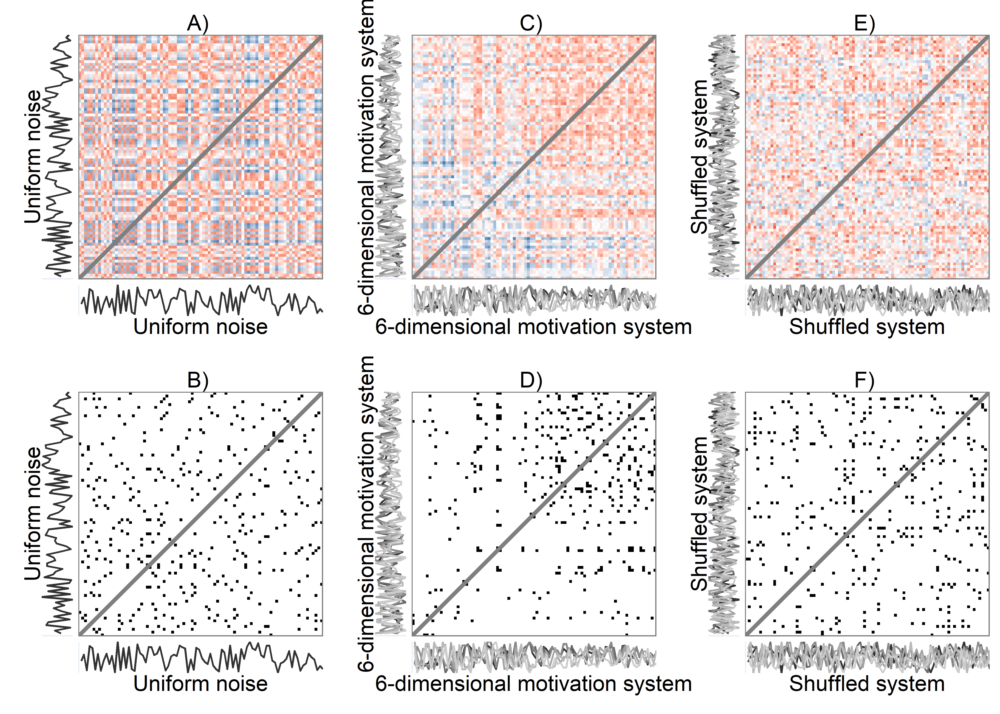
rqa_plot
## TableGrob (2 x 3) "arrange": 6 grobs
## z cells name
## 1 1 (1-1,1-1) arrange
## 2 2 (2-2,1-1) arrange
## 3 3 (1-1,2-2) arrange
## 4 4 (2-2,2-2) arrange
## 5 5 (1-1,3-3) arrange
## 6 6 (2-2,3-3) arrange
## grob
## 1 gtable[di_rp_dim]
## 2 gtable[bi_rp_dim]
## 3 gtable[di_rp_dim]
## 4 gtable[bi_rp_dim]
## 5 gtable[di_rp_dim]
## 6 gtable[bi_rp_dim]
ggsave("./figures/rqa_multiplot.png", rqa_plot, width = 11.69, height = 8.27, dpi = 300)Recurrence network demo
Here’s the 6-dimensional motivation system’s recurrence plot, weighted by similarity.
set.seed(1)
#######################
# si = similarity under the radius
emadata_nested_wrangled_both_recnets <- emadata_nested_wrangled %>%
dplyr::mutate(RN = purrr::map(.x = data_firstlast_divided_by_max,
.f = ~casnet::rn(.x %>% dplyr::select(#autonomy, competence, relatedness,
pleasure, interest, importance,
situation_requires,
anxiety_guilt_avoidance,
another_wants),
doEmbed = FALSE,
weighted = TRUE,
weightedBy = "si",
emRad = NA)))
##
## Auto-recurrence: Setting diagonal to (1 + max. distance) for analyses
##
## Searching for a radius that will yield 0.05 for RR
emadata_nested_wrangled_both_recnets <- emadata_nested_wrangled_both_recnets %>%
dplyr::mutate(graph_from_adjacency = purrr::map(.x = RN,
.f = ~igraph::graph_from_adjacency_matrix(.x,
weighted = TRUE,
mode = "upper",
diag = FALSE)))
# Edges with their distances
emadata_nested_wrangled_both_recnets <- emadata_nested_wrangled_both_recnets %>%
dplyr::mutate(edges_with_distances = purrr::map(.x = graph_from_adjacency,
.f = ~igraph::E(.x)$weight),
graph_from_adjacency_orig = graph_from_adjacency)
# Larger values are closer to the state; inverse of weight makes it more intuitive
for (i in 1:nrow(emadata_nested_wrangled_both_recnets)) {
igraph::E(emadata_nested_wrangled_both_recnets$graph_from_adjacency[[i]])$weight <- (1/emadata_nested_wrangled_both_recnets$edges_with_distances[[i]])
}
# A later note to self: Now weight is a measure of distance; how far apart two time points are
# (under the radius, i.e. they're reasonably similar to begin with)
####### To check:
# igraph::E(emadata_nested_wrangled_both_recnets$graph_from_adjacency[[1]])$weight
# igraph::E(emadata_nested_wrangled_both_recnets$graph_from_adjacency_orig[[1]])$weight
emadata_nested_wrangled_both_recnets <- emadata_nested_wrangled_both_recnets %>%
dplyr::mutate(RN_plot = purrr::map(.x = RN,
.f = ~casnet::rn_plot(.x,
plotDimensions = TRUE,
xlab = "6-dimensional motivation system",
ylab = "6-dimensional motivation system")))
# Make node size equal to strength. Strength is the sum of a node's edge weights.
for (i in 1:nrow(emadata_nested_wrangled_both_recnets)) {
igraph::V(emadata_nested_wrangled_both_recnets$graph_from_adjacency[[i]])$size <- (igraph::strength(emadata_nested_wrangled_both_recnets$graph_from_adjacency[[i]]))
}
# Rescaling weight as "width"; varies between 5 and 10
for (i in 1:nrow(emadata_nested_wrangled_both_recnets)) {
igraph::E(emadata_nested_wrangled_both_recnets$graph_from_adjacency[[i]])$width <-
casnet::elascer(igraph::E(emadata_nested_wrangled_both_recnets$graph_from_adjacency[[i]])$weight, lo = 5, hi = 10)
}The lengthy code chunk below extracts and marks attractors in the data.
# Get number of maximally connected node
emadata_nested_wrangled_both_recnets_nodes <- emadata_nested_wrangled_both_recnets %>%
dplyr::mutate(max_connected_day = purrr::map(.x = graph_from_adjacency,
.f = ~which.max(igraph::degree(.x))
))
emadata_nested_wrangled_both_recnets_nodes <- emadata_nested_wrangled_both_recnets_nodes %>%
dplyr::mutate(list_of_edges = purrr::map(.x = graph_from_adjacency,
.f = ~igraph::get.data.frame(.x)
))
emadata_nested_wrangled_both_recnets_nodes <- emadata_nested_wrangled_both_recnets_nodes %>%
dplyr::mutate(all_nodes_with_strengths =
purrr::map2(.x = data_firstlast_divided_by_max,
.y = graph_from_adjacency,
.f = ~{
data.frame(.x %>%
dplyr::select(#autonomy, competence, relatedness,
pleasure, interest, importance,
situation_requires, anxiety_guilt_avoidance, another_wants),
strength = igraph::strength(.y)) %>%
dplyr::mutate(time = dplyr::row_number()) %>%
tidyr::pivot_longer(cols = c(-strength, -time))
}
))
# Extract nodes (i.e. times) which connect to the strongest (i.e. most connected) node
emadata_nested_wrangled_both_recnets_nodes <- emadata_nested_wrangled_both_recnets_nodes %>%
dplyr::mutate(connecting_to_strongest = purrr::map2(.x = list_of_edges,
.y = max_connected_day,
.f = ~{
.x %>% dplyr::filter(from == .y | to == .y) %>%
dplyr::arrange(weight) %>%
tidyr::pivot_longer(cols = c(from, to),
values_to = "node") %>%
dplyr::distinct(node,
#.keep_all = TRUE
) %>%
dplyr::pull(node)
}
)
)
emadata_nested_wrangled_both_recnets_nodes <- emadata_nested_wrangled_both_recnets_nodes %>%
dplyr::mutate(all_nodes_with_strengths = purrr::map2(.x = all_nodes_with_strengths,
.y = connecting_to_strongest,
.f = ~{
dplyr::mutate(.x,
connecting_to_strongest =
dplyr::case_when(time %in% .y ~ TRUE,
TRUE ~ FALSE))
}
))
# Get number of 2nd maximally connected node, which doesn't connect to the 1st
emadata_nested_wrangled_both_recnets_nodes <- emadata_nested_wrangled_both_recnets_nodes %>%
dplyr::mutate(secondary_attractor_day = purrr::map2(.x = graph_from_adjacency,
.y = connecting_to_strongest,
.f = ~{
data.frame(degree = igraph::degree(.x),
time = 1:length(igraph::degree(.x))) %>%
dplyr::filter(!time %in% .y) %>%
dplyr::arrange(desc(degree)) %>%
dplyr::slice(1) %>%
dplyr::pull(time)
}
))
# Extract nodes (i.e. times) which connect to the 2nd strongest node, which doesn't connect to the 1st
emadata_nested_wrangled_both_recnets_nodes <- emadata_nested_wrangled_both_recnets_nodes %>%
dplyr::mutate(connecting_to_2nd_strongest = purrr::map2(.x = list_of_edges,
.y = secondary_attractor_day,
.f = ~{
.x %>% dplyr::filter(from == .y | to == .y) %>%
dplyr::arrange(weight) %>%
tidyr::pivot_longer(cols = c(from, to),
values_to = "node") %>%
dplyr::distinct(node,
#.keep_all = TRUE
) %>%
dplyr::pull(node)
}
)
)
# Save as a variable in the dataset
emadata_nested_wrangled_both_recnets_nodes <- emadata_nested_wrangled_both_recnets_nodes %>%
dplyr::mutate(all_nodes_with_strengths = purrr::map2(.x = all_nodes_with_strengths,
.y = connecting_to_2nd_strongest,
.f = ~{
dplyr::mutate(.x,
connecting_to_2nd_strongest =
dplyr::case_when(time %in% .y ~ TRUE,
TRUE ~ FALSE))
}
))
# Get number of 3rd maximally connected node, which doesn't connect to the 1st or second
emadata_nested_wrangled_both_recnets_nodes <- emadata_nested_wrangled_both_recnets_nodes %>%
dplyr::mutate(tertiary_attractor_day = purrr::pmap(list(..1 = graph_from_adjacency,
..2 = connecting_to_strongest,
..3 = connecting_to_2nd_strongest),
.f = ~{
data.frame(degree = igraph::degree(..1),
time = 1:length(igraph::degree(..1))) %>%
dplyr::filter(!time %in% ..2,
!time %in% ..3) %>%
dplyr::arrange(desc(degree)) %>%
dplyr::slice(1) %>%
dplyr::pull(time)
}
))
# Extract nodes (i.e. times) which connect to the 3rd strongest node
emadata_nested_wrangled_both_recnets_nodes <- emadata_nested_wrangled_both_recnets_nodes %>%
dplyr::mutate(connecting_to_3rd_strongest = purrr::map2(.x = list_of_edges,
.y = tertiary_attractor_day,
.f = ~{
.x %>% dplyr::filter(from == .y | to == .y) %>%
dplyr::arrange(weight) %>%
tidyr::pivot_longer(cols = c(from, to),
values_to = "node") %>%
dplyr::distinct(node,
#.keep_all = TRUE
) %>%
dplyr::pull(node)
}
)
)
# Save as a variable
emadata_nested_wrangled_both_recnets_nodes <- emadata_nested_wrangled_both_recnets_nodes %>%
dplyr::mutate(all_nodes_with_strengths = purrr::map2(.x = all_nodes_with_strengths,
.y = connecting_to_3rd_strongest,
.f = ~{
dplyr::mutate(.x,
connecting_to_3rd_strongest =
dplyr::case_when(time %in% .y ~ TRUE,
TRUE ~ FALSE))
}
))
# Get number of 4th maximally connected node, which doesn't connect to the 1st or second
emadata_nested_wrangled_both_recnets_nodes <- emadata_nested_wrangled_both_recnets_nodes %>%
dplyr::mutate(fourth_attractor_day = purrr::pmap(list(..1 = graph_from_adjacency,
..2 = connecting_to_strongest,
..3 = connecting_to_2nd_strongest,
..4 = connecting_to_3rd_strongest),
.f = ~{
data.frame(degree = igraph::degree(..1),
time = 1:length(igraph::degree(..1))) %>%
dplyr::filter(!time %in% ..2,
!time %in% ..3,
!time %in% ..4) %>%
dplyr::arrange(desc(degree)) %>%
dplyr::slice(1) %>%
dplyr::pull(time)
}
))
# Extract nodes (i.e. times) which connect to the 3rd strongest node
emadata_nested_wrangled_both_recnets_nodes <- emadata_nested_wrangled_both_recnets_nodes %>%
dplyr::mutate(connecting_to_4th_strongest = purrr::map2(.x = list_of_edges,
.y = fourth_attractor_day,
.f = ~{
.x %>% dplyr::filter(from == .y | to == .y) %>%
dplyr::arrange(weight) %>%
tidyr::pivot_longer(cols = c(from, to),
values_to = "node") %>%
dplyr::distinct(node,
#.keep_all = TRUE
) %>%
dplyr::pull(node)
}
)
)
# Save as a variable
emadata_nested_wrangled_both_recnets_nodes <- emadata_nested_wrangled_both_recnets_nodes %>%
dplyr::mutate(all_nodes_with_strengths = purrr::map2(.x = all_nodes_with_strengths,
.y = connecting_to_4th_strongest,
.f = ~{
dplyr::mutate(.x,
connecting_to_4th_strongest =
dplyr::case_when(time %in% .y ~ TRUE,
TRUE ~ FALSE))
}
))
################### Make plots
emadata_nested_wrangled_both_recnets_nodes_plots <- emadata_nested_wrangled_both_recnets_nodes %>%
dplyr::mutate(all_nodes_with_strengths =
purrr::map(.x = all_nodes_with_strengths,
.f = ~{
dplyr::mutate(.x,
attractors = dplyr::case_when(
strength == 0 ~ "Unique",
connecting_to_strongest == TRUE ~ "1st",
connecting_to_2nd_strongest == TRUE ~ "2nd",
connecting_to_3rd_strongest == TRUE ~ "3rd",
connecting_to_4th_strongest == TRUE ~ "4th",
TRUE ~ "Uncategorised"),
attractors = factor(attractors,
levels = c("1st",
"2nd",
"3rd",
"4th",
"Uncategorised",
"Unique")),
name = factor(name,
levels = c("pleasure",
"interest",
"importance",
"situation_requires",
"anxiety_guilt_avoidance",
"another_wants"),
labels = c("Pleasure",
"Interest",
"Importance",
"Situation requires",
"Anxiety guilt avoidance",
"Another wants")) %>%
forcats::fct_drop()) %>%
dplyr::group_by(attractors, name) %>%
dplyr::mutate(n = n()) %>%
dplyr::ungroup() %>%
dplyr::mutate(maxtime = max(time),
percentage_of_total =
(n / maxtime) %>% scales::percent(accuracy = 0.1),
proportion_of_total = n/maxtime,
attractors_n =
factor(paste0(attractors,
" (n = ", n, "; ",
percentage_of_total, ")")))
}
))Spiral graph with colored nodes
emadata_nested_wrangled_both_recnets_nodes_plots <- emadata_nested_wrangled_both_recnets_nodes_plots %>%
dplyr::mutate(node_colors = purrr::map(.x = all_nodes_with_strengths,
.f = ~{tidyr::pivot_wider(.x, names_from = name) %>%
dplyr::pull(attractors)}))
for (i in 1:nrow(emadata_nested_wrangled_both_recnets_nodes_plots)) {
levels(emadata_nested_wrangled_both_recnets_nodes_plots$node_colors[[i]]) <-
c(viridisLite::plasma(4,
end = 0.8,
direction = -1), "gray48", "white")
}
emadata_nested_wrangled_both_recnets_nodes_plots <- emadata_nested_wrangled_both_recnets_nodes_plots %>%
dplyr::mutate(spiralgraph_epochs = purrr::pmap(list(..1 = graph_from_adjacency,
..2 = node_colors,
..3 = User),
.f = ~casnet::make_spiral_graph(g = ..1,
arcs = 4,
# a = .1,
# b = 2,
markTimeBy = TRUE,
markEpochsBy = ..2,
epochColours = ..2,
showEpochLegend = FALSE,
scaleEdgeSize = 1/10,
scaleVertexSize = c(1, 5),
showSizeLegend = FALSE,
sizeLabel = "Node strength",
type = "Euler",
# alphaE = 0.1
# title = ..3
)))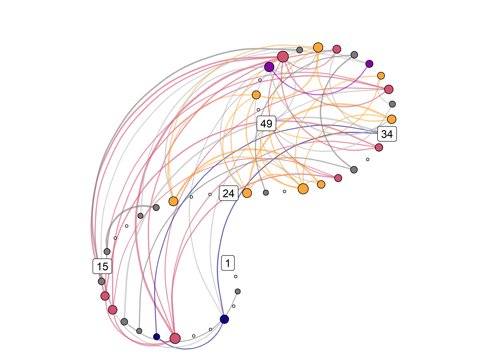
Attractor plot
emadata_nested_wrangled_both_recnets_nodes_plots <- emadata_nested_wrangled_both_recnets_nodes_plots %>%
dplyr::mutate(observations = purrr::map_dbl(.x = data_firstlast_divided_by_max,
.f = ~nrow(.)))
emadata_nested_wrangled_both_recnets_nodes_plots <- emadata_nested_wrangled_both_recnets_nodes_plots %>%
dplyr::mutate(observations_daily = purrr::map_dbl(.x = data_daily,
.f = ~nrow(.)))
emadata_nested_wrangled_both_recnets_nodes_plots <- emadata_nested_wrangled_both_recnets_nodes_plots %>%
dplyr::mutate(attractor_plots = purrr::pmap(list(..1 = all_nodes_with_strengths,
..2 = observations,
..3 = observations_daily,
..4 = User),
.f = ~{
dplyr::mutate(..1,
strength_rescaled = scales::rescale(strength, to = c(0.1, 2))) %>%
ggplot(data = .,
aes(x = forcats::fct_rev(name),
y = value,
size = strength_rescaled,
alpha = ifelse(strength_rescaled == 0.1, 1, strength_rescaled),
color = attractors_n)) +
scale_size_identity() +
geom_line(aes(group = time)) +
geom_point() +
scale_color_manual(values = c(viridisLite::plasma(4,
end = 0.8,
direction = -1),
"gray48", "gray87")) +
scale_y_continuous(labels = scales::label_percent(accuracy = 1)) +
theme_bw() +
theme(legend.position = "none") +
labs(y = "Percentage of maximum reported value of variable, across full time series",
x = NULL,
title = paste0(..4, " - based on ", ..2, " data points (", ..3, " days)")) +
facet_wrap(~attractors_n) +
coord_flip(ylim = c(0, 1))
}
))
emadata_nested_wrangled_both_recnets_nodes_plots$attractor_plots[[1]]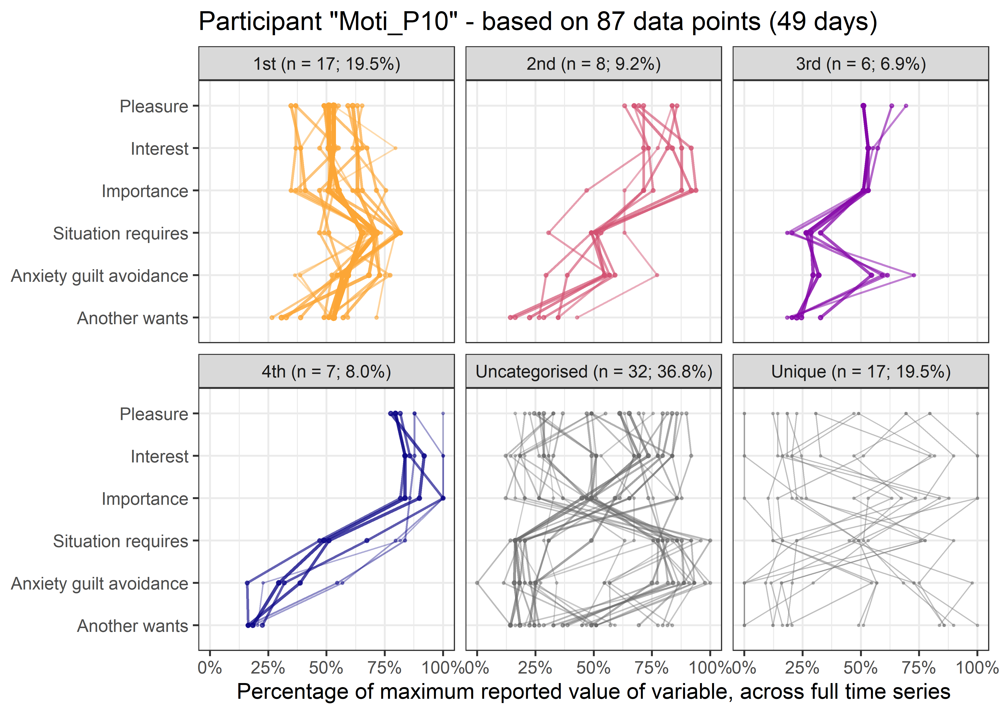
Research questions to be studied with multidimensional recurrence networks:
- How are the variables in the multivariate system connected to each other; what is the structure (i.e. the centrality indices) of the recurrence network, and do behaviour change outcomes depend on it?
- Do new attractors in the multidimensional recurrence network emerge, after an intervention has been implemented?
Session information
Description of the R environment can be found below.
devtools::session_info()
## - Session info -------------
## setting
## version
## os
## system
## ui
## language
## collate
## ctype
## tz
## date
## value
## R version 3.6.1 (2019-07-05)
## Windows 10 x64
## x86_64, mingw32
## RStudio
## (EN)
## Finnish_Finland.1252
## Finnish_Finland.1252
## Europe/Helsinki
## 2020-04-10
##
## - Packages -----------------
## package * version
## abind 1.4-5
## acepack 1.4.1
## assertthat 0.2.1
## backports 1.1.5
## base64enc 0.1-3
## BDgraph 2.62
## BiocManager 1.30.10
## bookdown * 0.18
## broom 0.5.5
## callr 3.4.2
## casnet 0.1.5
## cellranger 1.1.0
## checkmate 2.0.0
## cli 2.0.2
## cluster 2.1.0
## codetools 0.2-16
## colorspace 1.4-1
## corpcor 1.6.9
## crayon 1.3.4
## crosstalk 1.1.0.1
## curl 4.3
## d3Network 0.5.2.1
## data.table 1.12.8
## DBI 1.1.0
## dbplyr 1.4.2
## desc 1.2.0
## devtools 2.2.2
## digest 0.6.25
## dplyr * 0.8.5
## DT 0.13
## ellipsis 0.3.0
## evaluate 0.14
## fansi 0.4.1
## farver 2.0.3
## fdrtool 1.2.15
## forcats * 0.5.0
## foreach 1.4.8
## forecast 8.11
## foreign 0.8-76
## Formula 1.2-3
## fracdiff 1.5-1
## fs 1.3.2
## generics 0.0.2
## gganimate 1.0.5
## ggimage 0.2.7
## ggplot2 * 3.3.0
## ggplotify 0.0.5
## glasso 1.11
## glmnet 3.0-2
## glue 1.3.2
## gridExtra 2.3
## gridGraphics 0.5-0
## gtable 0.3.0
## gtools 3.8.1
## haven 2.2.0
## highr 0.8
## Hmisc 4.4-0
## hms 0.5.3
## htmlTable 1.13.3
## htmltools 0.4.0
## htmlwidgets 1.5.1
## httr 1.4.1
## huge 1.3.4
## igraph 1.2.4.2
## invctr 0.1.0
## iterators 1.0.12
## jpeg 0.1-8.1
## jsonlite 1.6.1
## knitr * 1.28
## labeling 0.3
## lattice 0.20-40
## latticeExtra 0.6-29
## lavaan 0.6-5
## leaps 3.1
## lifecycle 0.2.0
## lmtest 0.9-37
## locfit 1.5-9.2
## lubridate 1.7.4
## magick 2.3
## magrittr 1.5
## MASS 7.3-51.5
## Matrix 1.2-18
## matrixcalc 1.0-3
## memoise 1.1.0
## mgcv 1.8-31
## mgm * 1.2-8
## mnormt 1.5-6
## modelr 0.1.6
## munsell 0.5.0
## nlme 3.1-145
## nnet 7.3-13
## pander 0.6.3
## papaja 0.1.0.9942
## patchwork * 1.0.0
## pbapply 1.4-2
## pbivnorm 0.6.0
## pillar 1.4.3
## pkgbuild 1.0.6
## pkgconfig 2.0.3
## pkgload 1.0.2
## plyr 1.8.6
## png 0.1-7
## prettyunits 1.1.1
## processx 3.4.2
## progress 1.2.2
## proxy 0.4-23
## ps 1.3.2
## psych 1.9.12.31
## purrr * 0.3.3
## qgraph 1.6.5
## quadprog 1.5-8
## quantmod 0.4-16
## R6 2.4.1
## randtests 1.0
## RColorBrewer 1.1-2
## Rcpp 1.0.4
## readr * 1.3.1
## readxl 1.3.1
## remotes 2.1.1
## reprex 0.3.0
## reshape2 1.4.3
## rjson 0.2.20
## rlang 0.4.5
## rmarkdown 2.1
## rmdfiltr 0.1.2
## rpart 4.1-15
## rprojroot 1.3-2
## rstudioapi 0.11
## rvcheck 0.1.8
## rvest 0.3.5
## scales 1.1.0
## sessioninfo 1.1.1
## shape 1.4.4
## stringi 1.4.6
## stringr * 1.4.0
## survival 3.1-11
## testthat 2.3.2
## tibble * 2.1.3
## tidyr * 1.0.2
## tidyselect 1.0.0
## tidyverse * 1.3.0
## timeDate 3043.102
## TSA 1.2
## tseries 0.10-47
## TTR 0.23-6
## tweenr 1.0.1
## urca 1.3-0
## usethis 1.5.1
## vctrs 0.2.4
## viridis 0.5.1
## viridisLite 0.3.0
## webshot 0.5.2
## whisker 0.4
## withr 2.1.2
## xfun 0.12
## xml2 1.2.5
## xts 0.12-0
## yaml 2.2.1
## zip 2.0.4
## zoo 1.8-7
## date lib
## 2016-07-21 [1]
## 2016-10-29 [1]
## 2019-03-21 [1]
## 2019-10-02 [1]
## 2015-07-28 [1]
## 2019-12-05 [1]
## 2019-11-16 [1]
## 2020-03-05 [1]
## 2020-02-29 [1]
## 2020-02-12 [1]
## 2020-01-30 [1]
## 2016-07-27 [1]
## 2020-02-06 [1]
## 2020-02-28 [1]
## 2019-06-19 [2]
## 2018-12-24 [2]
## 2019-03-18 [1]
## 2017-04-01 [1]
## 2017-09-16 [1]
## 2020-03-13 [1]
## 2019-12-02 [1]
## 2015-01-31 [1]
## 2019-12-09 [1]
## 2019-12-15 [1]
## 2019-06-17 [1]
## 2018-05-01 [1]
## 2020-02-17 [1]
## 2020-02-23 [1]
## 2020-03-07 [1]
## 2020-03-23 [1]
## 2019-09-20 [1]
## 2019-05-28 [1]
## 2020-01-08 [1]
## 2020-01-16 [1]
## 2015-07-08 [1]
## 2020-03-01 [1]
## 2020-02-09 [1]
## 2020-02-09 [1]
## 2020-03-03 [2]
## 2018-05-03 [1]
## 2020-01-24 [1]
## 2020-03-05 [1]
## 2018-11-29 [1]
## 2020-02-09 [1]
## 2020-01-09 [1]
## 2020-03-05 [1]
## 2020-03-12 [1]
## 2019-10-01 [1]
## 2019-12-11 [1]
## 2020-03-12 [1]
## 2017-09-09 [1]
## 2020-02-25 [1]
## 2019-03-25 [1]
## 2018-06-26 [1]
## 2019-11-08 [1]
## 2019-03-20 [1]
## 2020-03-23 [1]
## 2020-01-08 [1]
## 2019-12-04 [1]
## 2019-10-04 [1]
## 2019-10-08 [1]
## 2019-08-05 [1]
## 2019-10-28 [1]
## 2019-11-27 [1]
## 2019-03-07 [1]
## 2019-07-26 [1]
## 2019-10-24 [1]
## 2020-02-02 [1]
## 2020-02-06 [1]
## 2014-08-23 [1]
## 2020-02-19 [2]
## 2019-12-19 [1]
## 2019-08-28 [1]
## 2020-01-16 [1]
## 2020-03-06 [1]
## 2019-04-30 [1]
## 2020-03-23 [1]
## 2018-04-11 [1]
## 2020-01-24 [1]
## 2014-11-22 [1]
## 2019-12-20 [2]
## 2019-11-27 [2]
## 2012-09-15 [1]
## 2017-04-21 [1]
## 2019-11-09 [2]
## 2019-11-19 [1]
## 2020-02-03 [1]
## 2020-02-22 [1]
## 2018-06-12 [1]
## 2020-03-04 [2]
## 2020-02-25 [2]
## 2018-11-06 [1]
## 2020-03-23 [1]
## 2019-12-01 [1]
## 2019-08-31 [1]
## 2015-01-23 [1]
## 2019-12-20 [1]
## 2019-10-09 [1]
## 2019-09-22 [1]
## 2018-10-29 [1]
## 2020-03-03 [1]
## 2013-12-03 [1]
## 2020-01-24 [1]
## 2020-02-09 [1]
## 2019-05-16 [1]
## 2019-03-05 [1]
## 2020-02-13 [1]
## 2020-01-08 [1]
## 2019-10-18 [1]
## 2020-02-21 [1]
## 2019-11-20 [1]
## 2020-03-08 [1]
## 2019-11-12 [1]
## 2014-11-17 [1]
## 2014-12-07 [1]
## 2020-03-17 [1]
## 2018-12-21 [1]
## 2019-03-13 [1]
## 2020-02-15 [1]
## 2019-05-16 [1]
## 2017-12-11 [1]
## 2018-06-08 [1]
## 2020-03-01 [1]
## 2020-01-20 [1]
## 2019-12-11 [1]
## 2019-04-12 [2]
## 2018-01-03 [1]
## 2020-02-07 [1]
## 2020-03-01 [1]
## 2019-11-08 [1]
## 2019-11-18 [1]
## 2018-11-05 [1]
## 2018-02-07 [1]
## 2020-02-17 [1]
## 2019-02-10 [1]
## 2020-03-07 [2]
## 2020-03-02 [1]
## 2019-06-06 [1]
## 2020-01-24 [1]
## 2020-01-27 [1]
## 2019-11-21 [1]
## 2018-02-21 [1]
## 2018-06-30 [1]
## 2019-06-05 [1]
## 2019-12-15 [1]
## 2018-12-14 [1]
## 2016-09-06 [1]
## 2019-07-04 [1]
## 2020-03-10 [1]
## 2018-03-29 [1]
## 2018-02-01 [1]
## 2019-11-22 [1]
## 2019-08-28 [1]
## 2018-03-15 [1]
## 2020-01-13 [1]
## 2020-03-11 [1]
## 2020-01-19 [1]
## 2020-02-01 [1]
## 2019-09-01 [1]
## 2020-01-10 [1]
## source
## CRAN (R 3.6.0)
## CRAN (R 3.6.1)
## CRAN (R 3.6.1)
## CRAN (R 3.6.1)
## CRAN (R 3.6.0)
## CRAN (R 3.6.2)
## CRAN (R 3.6.1)
## CRAN (R 3.6.3)
## CRAN (R 3.6.3)
## CRAN (R 3.6.3)
## Github (fredhasselman/casnet@35ee389)
## CRAN (R 3.6.1)
## CRAN (R 3.6.3)
## CRAN (R 3.6.3)
## CRAN (R 3.6.1)
## CRAN (R 3.6.1)
## CRAN (R 3.6.1)
## CRAN (R 3.6.0)
## CRAN (R 3.6.1)
## CRAN (R 3.6.3)
## CRAN (R 3.6.2)
## CRAN (R 3.6.1)
## CRAN (R 3.6.1)
## CRAN (R 3.6.2)
## CRAN (R 3.6.1)
## CRAN (R 3.6.1)
## CRAN (R 3.6.3)
## CRAN (R 3.6.3)
## CRAN (R 3.6.3)
## CRAN (R 3.6.1)
## CRAN (R 3.6.1)
## CRAN (R 3.6.1)
## CRAN (R 3.6.2)
## CRAN (R 3.6.2)
## CRAN (R 3.6.0)
## CRAN (R 3.6.3)
## CRAN (R 3.6.3)
## CRAN (R 3.6.3)
## CRAN (R 3.6.3)
## CRAN (R 3.6.0)
## CRAN (R 3.6.2)
## CRAN (R 3.6.3)
## CRAN (R 3.6.1)
## CRAN (R 3.6.3)
## CRAN (R 3.6.2)
## CRAN (R 3.6.3)
## CRAN (R 3.6.3)
## CRAN (R 3.6.1)
## CRAN (R 3.6.2)
## CRAN (R 3.6.3)
## CRAN (R 3.6.1)
## CRAN (R 3.6.3)
## CRAN (R 3.6.1)
## CRAN (R 3.6.0)
## CRAN (R 3.6.1)
## CRAN (R 3.6.1)
## CRAN (R 3.6.1)
## CRAN (R 3.6.2)
## CRAN (R 3.6.2)
## CRAN (R 3.6.1)
## CRAN (R 3.6.1)
## CRAN (R 3.6.1)
## CRAN (R 3.6.1)
## CRAN (R 3.6.3)
## CRAN (R 3.6.1)
## CRAN (R 3.6.1)
## CRAN (R 3.6.1)
## CRAN (R 3.6.3)
## CRAN (R 3.6.3)
## CRAN (R 3.6.0)
## CRAN (R 3.6.3)
## CRAN (R 3.6.2)
## CRAN (R 3.6.1)
## CRAN (R 3.6.2)
## CRAN (R 3.6.3)
## CRAN (R 3.6.1)
## CRAN (R 3.6.1)
## CRAN (R 3.6.1)
## CRAN (R 3.6.2)
## CRAN (R 3.6.1)
## CRAN (R 3.6.2)
## CRAN (R 3.6.2)
## CRAN (R 3.6.0)
## CRAN (R 3.6.1)
## CRAN (R 3.6.2)
## Github (jmbh/mgm@bacd9c5)
## CRAN (R 3.6.2)
## CRAN (R 3.6.3)
## CRAN (R 3.6.1)
## CRAN (R 3.6.3)
## CRAN (R 3.6.3)
## CRAN (R 3.6.1)
## Github (crsh/papaja@02f3bd1)
## CRAN (R 3.6.1)
## CRAN (R 3.6.1)
## CRAN (R 3.6.0)
## CRAN (R 3.6.2)
## CRAN (R 3.6.1)
## CRAN (R 3.6.1)
## CRAN (R 3.6.1)
## CRAN (R 3.6.3)
## CRAN (R 3.6.0)
## CRAN (R 3.6.2)
## CRAN (R 3.6.3)
## CRAN (R 3.6.1)
## CRAN (R 3.6.1)
## CRAN (R 3.6.3)
## CRAN (R 3.6.2)
## CRAN (R 3.6.1)
## CRAN (R 3.6.3)
## CRAN (R 3.6.1)
## CRAN (R 3.6.3)
## CRAN (R 3.6.1)
## CRAN (R 3.6.0)
## CRAN (R 3.6.0)
## CRAN (R 3.6.1)
## CRAN (R 3.6.1)
## CRAN (R 3.6.1)
## CRAN (R 3.6.3)
## CRAN (R 3.6.1)
## CRAN (R 3.6.1)
## CRAN (R 3.6.0)
## CRAN (R 3.6.3)
## CRAN (R 3.6.2)
## CRAN (R 3.6.3)
## CRAN (R 3.6.1)
## CRAN (R 3.6.1)
## CRAN (R 3.6.3)
## CRAN (R 3.6.3)
## CRAN (R 3.6.1)
## CRAN (R 3.6.1)
## CRAN (R 3.6.1)
## CRAN (R 3.6.0)
## CRAN (R 3.6.2)
## CRAN (R 3.6.1)
## CRAN (R 3.6.3)
## CRAN (R 3.6.3)
## CRAN (R 3.6.1)
## CRAN (R 3.6.2)
## CRAN (R 3.6.1)
## CRAN (R 3.6.2)
## CRAN (R 3.6.0)
## CRAN (R 3.6.1)
## CRAN (R 3.6.1)
## CRAN (R 3.6.2)
## CRAN (R 3.6.1)
## CRAN (R 3.6.1)
## CRAN (R 3.6.1)
## CRAN (R 3.6.3)
## CRAN (R 3.6.1)
## CRAN (R 3.6.1)
## CRAN (R 3.6.1)
## CRAN (R 3.6.1)
## CRAN (R 3.6.1)
## CRAN (R 3.6.2)
## CRAN (R 3.6.3)
## CRAN (R 3.6.2)
## CRAN (R 3.6.2)
## CRAN (R 3.6.1)
## CRAN (R 3.6.2)
##
## [1] C:/localdata/hema/rlibs
## [2] C:/Program Files/R/R-3.6.1/library
pander::pander(sessionInfo())R version 3.6.1 (2019-07-05)
Platform: x86_64-w64-mingw32/x64 (64-bit)
locale: LC_COLLATE=Finnish_Finland.1252, LC_CTYPE=Finnish_Finland.1252, LC_MONETARY=Finnish_Finland.1252, LC_NUMERIC=C and LC_TIME=Finnish_Finland.1252
attached base packages: stats, graphics, grDevices, utils, datasets, methods and base
other attached packages: patchwork(v.1.0.0), bookdown(v.0.18), knitr(v.1.28), mgm(v.1.2-8), forcats(v.0.5.0), stringr(v.1.4.0), dplyr(v.0.8.5), purrr(v.0.3.3), readr(v.1.3.1), tidyr(v.1.0.2), tibble(v.2.1.3), ggplot2(v.3.3.0) and tidyverse(v.1.3.0)
loaded via a namespace (and not attached): readxl(v.1.3.1), backports(v.1.1.5), Hmisc(v.4.4-0), BDgraph(v.2.62), plyr(v.1.8.6), igraph(v.1.2.4.2), splines(v.3.6.1), crosstalk(v.1.1.0.1), usethis(v.1.5.1), digest(v.0.6.25), foreach(v.1.4.8), casnet(v.0.1.5), htmltools(v.0.4.0), matrixcalc(v.1.0-3), viridis(v.0.5.1), magick(v.2.3), fansi(v.0.4.1), memoise(v.1.1.0), magrittr(v.1.5), checkmate(v.2.0.0), gganimate(v.1.0.5), cluster(v.2.1.0), remotes(v.2.1.1), modelr(v.0.1.6), rmdfiltr(v.0.1.2), xts(v.0.12-0), forecast(v.8.11), tseries(v.0.10-47), prettyunits(v.1.1.1), jpeg(v.0.1-8.1), colorspace(v.1.4-1), rvest(v.0.3.5), haven(v.2.2.0), xfun(v.0.12), callr(v.3.4.2), crayon(v.1.3.4), jsonlite(v.1.6.1), survival(v.3.1-11), zoo(v.1.8-7), iterators(v.1.0.12), glue(v.1.3.2), gtable(v.0.3.0), webshot(v.0.5.2), pkgbuild(v.1.0.6), shape(v.1.4.4), quantmod(v.0.4-16), abind(v.1.4-5), scales(v.1.1.0), DBI(v.1.1.0), Rcpp(v.1.0.4), viridisLite(v.0.3.0), progress(v.1.2.2), htmlTable(v.1.13.3), gridGraphics(v.0.5-0), proxy(v.0.4-23), foreign(v.0.8-76), Formula(v.1.2-3), stats4(v.3.6.1), randtests(v.1.0), DT(v.0.13), glmnet(v.3.0-2), papaja(v.0.1.0.9942), htmlwidgets(v.1.5.1), httr(v.1.4.1), RColorBrewer(v.1.1-2), lavaan(v.0.6-5), ellipsis(v.0.3.0), acepack(v.1.4.1), pkgconfig(v.2.0.3), farver(v.2.0.3), nnet(v.7.3-13), invctr(v.0.1.0), dbplyr(v.1.4.2), locfit(v.1.5-9.2), labeling(v.0.3), ggplotify(v.0.0.5), tidyselect(v.1.0.0), rlang(v.0.4.5), reshape2(v.1.4.3), munsell(v.0.5.0), cellranger(v.1.1.0), tools(v.3.6.1), cli(v.2.0.2), generics(v.0.0.2), devtools(v.2.2.2), broom(v.0.5.5), fdrtool(v.1.2.15), evaluate(v.0.14), yaml(v.2.2.1), processx(v.3.4.2), fs(v.1.3.2), zip(v.2.0.4), pander(v.0.6.3), glasso(v.1.11), pbapply(v.1.4-2), nlme(v.3.1-145), whisker(v.0.4), leaps(v.3.1), xml2(v.1.2.5), compiler(v.3.6.1), rstudioapi(v.0.11), curl(v.4.3), png(v.0.1-7), testthat(v.2.3.2), reprex(v.0.3.0), huge(v.1.3.4), tweenr(v.1.0.1), ggimage(v.0.2.7), pbivnorm(v.0.6.0), stringi(v.1.4.6), highr(v.0.8), ps(v.1.3.2), desc(v.1.2.0), qgraph(v.1.6.5), TSA(v.1.2), lattice(v.0.20-40), Matrix(v.1.2-18), psych(v.1.9.12.31), urca(v.1.3-0), vctrs(v.0.2.4), pillar(v.1.4.3), lifecycle(v.0.2.0), BiocManager(v.1.30.10), lmtest(v.0.9-37), data.table(v.1.12.8), corpcor(v.1.6.9), R6(v.2.4.1), latticeExtra(v.0.6-29), gridExtra(v.2.3), sessioninfo(v.1.1.1), codetools(v.0.2-16), pkgload(v.1.0.2), MASS(v.7.3-51.5), gtools(v.3.8.1), assertthat(v.0.2.1), rprojroot(v.1.3-2), rjson(v.0.2.20), withr(v.2.1.2), fracdiff(v.1.5-1), mnormt(v.1.5-6), mgcv(v.1.8-31), parallel(v.3.6.1), hms(v.0.5.3), quadprog(v.1.5-8), grid(v.3.6.1), rpart(v.4.1-15), timeDate(v.3043.102), rvcheck(v.0.1.8), rmarkdown(v.2.1), d3Network(v.0.5.2.1), TTR(v.0.23-6), lubridate(v.1.7.4) and base64enc(v.0.1-3)